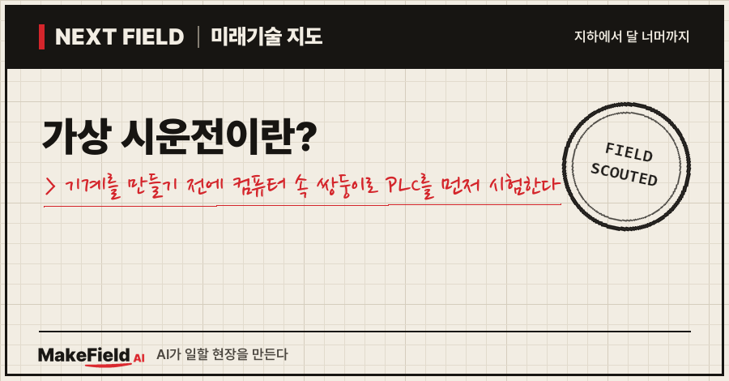
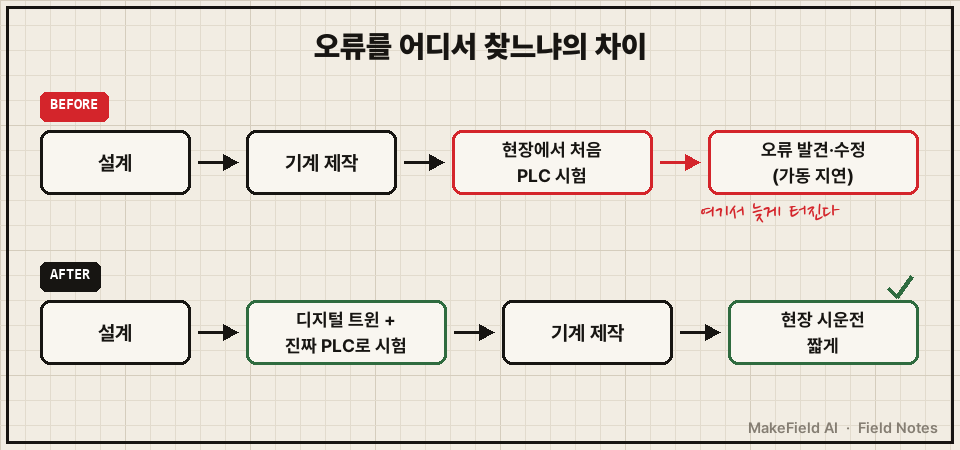
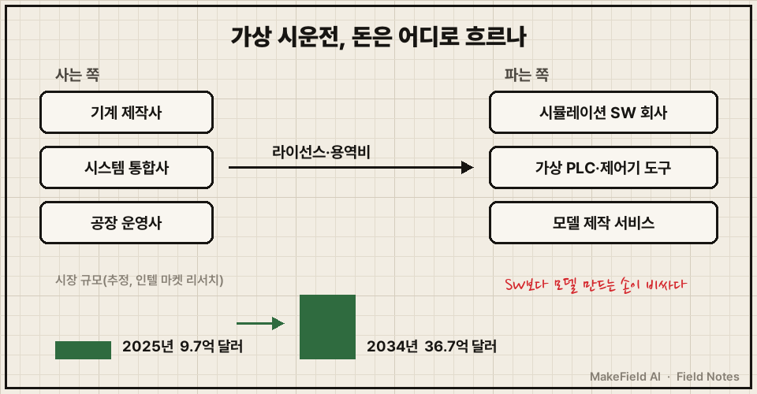
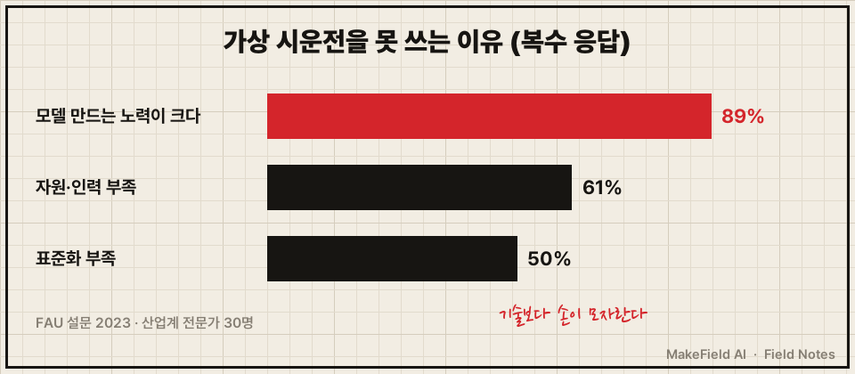

한 줄 요약: 가상 시운전은 기계·생산라인을 실제로 짓기 전에 컴퓨터 속 '쌍둥이 설비(디지털 트윈)'에 진짜 PLC 프로그램을 연결해 미리 돌려 보는 방법이에요. 시장조사업체 인텔 마켓 리서치는 이 시장을 2025년 9억 7천만 달러에서 2034년 36억 7천만 달러로, 연평균 16%씩 커질 것으로 추정했습니다(Intel Market Research, 2026-07, 추정).
"공장 설비는 다 만든 다음에 켜 보는 것 아니었어?" 궁금했던 분, 그리고 이 '미리 돌려 보기'에 누가 돈을 내고 누가 버는지 알고 싶은 분을 위한 글입니다. 2026년 10월 기준 공개 자료로 풀어볼게요.
1. 가상 시운전이란 무엇인가요
가상 시운전(Virtual Commissioning)이란 실제 설비 대신 컴퓨터 속 설비 모델에 실제 제어 프로그램을 물려, 현장에 가기 전에 동작을 시험하는 일이다. 비행기 조종사가 진짜 비행기 대신 시뮬레이터에서 먼저 연습하는 것과 같은 원리예요. 다른 점은 시험 대상이 사람이 아니라 '설비를 움직이는 프로그램'이라는 것입니다.
💡 시운전(커미셔닝) — 새로 만든 설비를 처음 켜서, 설계대로 움직이는지 하나씩 확인하고 넘겨받는 과정. 새 차를 출고 전에 시동 걸어 보는 점검의 공장판이다.
💡 PLC(프로그래머블 로직 컨트롤러) — 컨베이어·모터·밸브를 정해진 순서대로 켜고 끄는 산업용 소형 컴퓨터. 기계의 '반사신경'이다.
💡 디지털 트윈 — 실제 설비와 똑같이 움직이도록 만든 컴퓨터 속 쌍둥이 모델. 센서 신호를 주고받으며 진짜 기계인 척한다.
지멘스는 시뮬레이션 도구 SIMIT를 소개하며 "기계나 시스템의 시뮬레이션 모델을 만들어 디지털 트윈의 기반을 만들고", 실제 제어 프로그램으로 자동화 기능을 시운전 전에 시험할 수 있다고 설명해요(지멘스 SIMIT 제품 페이지). 연결 방식은 두 가지입니다.
| 방식 | 무엇을 연결하나 | 쉽게 말하면 |
|---|---|---|
| 소프트웨어 연결(SIL) | 가상 PLC 프로그램 ↔ 설비 모델 | PLC까지 컴퓨터 속에 있음. 책상 위 노트북 한 대로 시험 |
| 하드웨어 연결(HIL) | 실제 PLC 장비 ↔ 설비 모델 | 진짜 PLC 상자를 컴퓨터 속 가짜 설비에 연결 |
(출처: 지멘스 SIMIT 제품 페이지, Kunz 외 2023)
💡 SIL·HIL — SIL(Software-in-the-Loop)은 제어기도 소프트웨어로 흉내 내는 시험, HIL(Hardware-in-the-Loop)은 실제 제어기 장비를 가짜 설비에 꽂는 시험이다.
2. 왜 지금 뜨나요 — 현장에서 늦게 발견하는 비용
이 방식의 핵심 가치는 프로그램 오류를 '현장 설치 후'가 아니라 '설계 단계'에서 찾는 데 있다. 기존 방식에서는 기계가 다 만들어진 뒤에야 PLC 프로그램을 처음 실물에 물려 볼 수 있어요. 그때 오류가 나오면 설비 앞에서 고치는 시간만큼 가동이 늦어집니다.

그림을 글로 옮기면 이렇습니다. 위 줄은 오류가 제작이 끝난 현장에서야 드러나는 기존 순서, 아래 줄은 설계와 제작 사이에 '컴퓨터 속 시험' 칸을 하나 끼워 넣은 순서예요.
효과를 보여 주는 공개 사례로는 지멘스가 소개한 엔지니어링 기업 위프로 파리(Wipro PARI)가 있어요. 엔진 조립라인 증설 프로젝트에서 지멘스 Process Simulate로 컴퓨터 속 시험을 먼저 해 현장 시운전 시간을 70% 줄였고, 보통 6~8개월 걸릴 일을 설계부터 현장 시운전까지 3개월에 끝냈다고 밝혔습니다. 다른 가공 라인에서는 재작업을 최대 50%, 납기를 최대 10% 줄였다고 해요(지멘스 Tecnomatix 블로그, 2022-08-25). 다만 이 숫자는 도구를 파는 회사가 직접 소개한 사례이고, 독립 기관이 검증한 수치는 찾지 못했습니다.
또 하나의 흐름도 있어요. 2026년 들어 AI가 PLC 코드를 직접 쓰는 도구가 나오면서(이전 글 'PLC AI 에이전트란?' 참고), 코드를 '빨리 쓰는 것'보다 '현장에 넣기 전에 맞는지 확인하는 것'이 더 중요해질 수 있다는 해석이 가능합니다(추정 — 공개 자료를 바탕으로 한 해석).
3. 돈의 흐름 — 누가 사고, 누가 파나요
이 시험의 비용은 기계 제작사·자동화 시스템 통합사·공장 운영사가 내고, 시뮬레이션 소프트웨어 회사와 모델 제작 서비스가 나눠 가진다. 인텔 마켓 리서치는 시장을 2025년 9억 7천만 달러, 2026년 11억 3천만 달러, 2034년 36억 7천만 달러로 추정했어요(Intel Market Research, 2026-07, 추정). 시장조사 추정치는 기관마다 차이가 크니 방향을 보는 숫자로만 쓰는 게 안전합니다.
💡 연평균 성장률(CAGR) — 해마다 평균 몇 %씩 커지는지 나타내는 숫자. 16%면 대략 5년 안에 두 배가 되는 속도다.
💡 시스템 통합사(SI) — 여러 회사 장비를 사서 묶고 프로그램을 짜서, 하나의 생산라인으로 완성해 넘겨주는 회사.

아래 기업명은 산업 구조를 설명하기 위한 예시이며 투자 판단과 무관합니다.
| 파는 쪽 | 무엇을 파나 | 예시(공개 자료 기준) |
|---|---|---|
| 시뮬레이션·디지털 트윈 소프트웨어 | 설비 모델링·3D 시뮬레이션 라이선스 | 지멘스, 다쏘시스템, 로크웰 오토메이션, ABB 등(Intel Market Research 주요 기업 목록) |
| 가상 제어기·연결 도구 | PLC를 컴퓨터 속에서 흉내 내는 소프트웨어 | 지멘스 S7-PLCSIM Advanced(SIMIT와 SIL 연결) |
| 모델 제작·검증 서비스 | 설비 모델을 만들고 시험 시나리오를 돌려 주는 용역 | 엔지니어링 서비스 회사(설문 응답 기업의 17%가 이 유형) |
(출처: Intel Market Research 2026, 지멘스 SIMIT 제품 페이지, Kunz 외 2023)
한국은 이 시장의 '수입국'에 가까워요. 2024년 과학기술정보통신부 공모 사업 '글로벌 해외 진출을 위한 제조 데이터 상호연동 가상 시운전 기술개발'에 한국전자통신연구원(ETRI)과 경북·경남 컨소시엄이 선정됐고, 총사업비 493억 원(국비 300억 원)으로 2028년까지 가상 시운전 기술 국산화를 추진합니다. 보도는 그 배경으로 다쏘·지멘스 같은 해외 기업이 시장을 장악해 비싼 라이선스와 폐쇄적인 데이터 환경 때문에 국내 중견·중소기업이 도입하기 어렵다는 점을 들었어요(경북매일, 2024-04-18).
4. 누가 하고 있나요 — 큰 회사, 그리고 AI·로봇 쪽 신규 진입
지금 이 방법을 실제로 쓰는 곳은 주로 대기업이다. 독일 에어랑겐-뉘른베르크대(FAU) 연구팀이 2023년 1~2월 산업계 전문가 30명을 설문한 결과, 55%가 이를 쓰고 17%가 도입을 계획 중이었어요. 응답 기업의 77%가 대기업이었고, 기업 규모와 사용 여부 사이에 중간 정도의 상관이 나타났습니다(Kunz 외, 2023). 사용하는 곳도 대부분 '드물게(47%)' 또는 '가끔(24%)' 쓴다고 답했어요.
국내에서는 PLC 쪽에서 접근하는 회사도 보입니다. 뉴시스 보도에 따르면 국내 기업 유디엠텍은 기존 PLC 제어 프로그램을 디지털 환경에서 그대로 재현·분석하는 기술로 컴퓨터 속 시운전을 구현하고, 이를 엔비디아의 로봇 시뮬레이터 아이작 심(Isaac Sim)과 결합해 협동로봇 동작 검증·충돌 회피·공정 시뮬레이션에 쓰겠다고 밝혔어요(뉴시스, 2026-05-12).
💡 Sim2Real — 시뮬레이션(Sim)에서 검증한 동작을 실제(Real) 로봇·설비로 그대로 옮기는 것. 가상과 현실의 차이를 줄이는 게 관건이다.
5. 언제 오나요, 한계는 무엇인가요
가상 시운전의 가장 큰 벽은 기술이 아니라 '모델을 만드는 수고'다. 같은 FAU 설문에서 도입 장벽으로 꼽힌 것은 아래 세 가지였어요(복수 응답).

| 도입 장벽 | 응답 비율 |
|---|---|
| 모델 제작에 드는 노력이 크다 | 89% |
| 자원·인력 부족 | 61% |
| 표준화 부족 | 50% |
(출처: Kunz 외, 2023 — 응답자 30명이라 산업 전체를 대표하는 숫자로 보기는 어렵다)
논문 저자들은 "도입 장벽은 기술적인 것이 아니라 자원 제약"이라고 정리했어요. 시장조사 쪽도 비슷합니다. 인텔 마켓 리서치는 성장을 막는 요인으로 높은 초기 라이선스·교육 비용, 제조사마다 다른 파일 형식, 최신 연결 기능이 없는 오래된 PLC·감시 시스템, 클라우드로 시뮬레이션 데이터를 옮길 때의 보안 위험을 꼽았습니다(Intel Market Research, 2026-07).
정리하면 '언제 오나'의 답은 "대기업·복잡한 라인에는 이미 왔고, 중소 현장은 모델 만드는 비용이 내려가야 온다"에 가깝습니다(추정 — 설문·보고서 기반 해석). 한국 국산화 사업이 2028년까지로 잡혀 있다는 점도 하나의 시간표예요.
자주 묻는 질문(FAQ)
Q. 가상 시운전과 디지털 트윈은 같은 말인가요?
A. 아니에요. 디지털 트윈은 '컴퓨터 속 쌍둥이 설비'라는 모델 자체이고, 시운전 시험은 그 모델에 진짜 제어 프로그램을 연결해 시험하는 '활용법' 중 하나입니다. 지멘스도 SIMIT를 디지털 트윈의 '기반'을 만드는 도구로 설명해요.
Q. 컴퓨터로 미리 시험하면 현장 시운전이 필요 없나요?
A. 그렇지 않아요. 공개 사례도 현장 시운전 '시간을 줄였다'고 말하지, 없앴다고 하지 않습니다. 모델이 실제 설비와 다르면 현장에서 다시 맞춰야 해요.
Q. 작은 회사도 할 수 있나요?
A. 설문에서는 기업 규모가 클수록 많이 썼고, 가장 큰 장벽이 모델 제작 노력(89%)이었어요. 정부가 국산화 사업을 하는 이유도 해외 라이선스 비용 부담 때문이라고 보도됐습니다.
오늘의 용어 정리
- 가상 시운전(Virtual Commissioning) — 실제 설비 대신 컴퓨터 속 모델에 진짜 제어 프로그램을 연결해 미리 시험하는 일.
- 시운전(커미셔닝) — 새 설비를 처음 켜서 설계대로 움직이는지 확인하고 넘겨받는 과정.
- PLC — 기계를 정해진 순서대로 움직이는 산업용 소형 컴퓨터.
- 디지털 트윈 — 실제 설비처럼 움직이는 컴퓨터 속 쌍둥이 모델.
- SIL·HIL — 제어기까지 소프트웨어로 흉내 내는 시험 / 실제 제어기 장비를 가짜 설비에 꽂는 시험.
- 연평균 성장률(CAGR) — 해마다 평균 몇 %씩 커지는지 나타내는 숫자.
- 시스템 통합사(SI) — 여러 장비를 묶어 하나의 생산라인으로 완성해 주는 회사.
- Sim2Real — 시뮬레이션에서 검증한 동작을 실제 설비로 옮기는 것.
설비를 짓기 전에 컴퓨터 속에서 먼저 틀려 보는 것, 그게 이 기술이 파는 가치예요. 다만 그 '컴퓨터 속 설비'를 만드는 손이 아직 비싸다는 게 이 시장의 현재 위치입니다. 다음 Next Field에서도 또 다른 '다음 현장'을 가 볼게요. 여러분 주변의 설비라면, 컴퓨터 속에서 먼저 시험해 보고 싶은 동작은 무엇인가요?
출처
[1] 인텔 마켓 리서치 Intel Market Research(2026-07) — 가상 시운전 시장 2025년 9억 7천만 달러·2026년 11억 3천만 달러·2034년 36억 7천만 달러, 연평균 16%(추정), 주요 기업(지멘스·로크웰·다쏘·ABB 등), 성장 제약 요인(초기 비용·형식 표준 분산·노후 제어 시스템·데이터 보안)
→ https://www.intelmarketresearch.com/virtual-commissioning-market-138
[2] 지멘스 SIMIT 제품 페이지(2026) — 시뮬레이션 모델로 디지털 트윈 기반 구축, 실제 제어 프로그램으로 시운전 전 시험, 운전원 교육, 하드웨어 연결(HIL)·S7-PLCSIM Advanced로 소프트웨어 연결(SIL)
→ https://www.siemens.com/en-us/products/simit/
[3] 지멘스 Tecnomatix 블로그(2022-08-25) — 위프로 파리 엔진 조립라인 가상 시운전으로 현장 시운전 시간 70% 단축, 6~8개월 걸릴 일을 3개월에, 가공 라인 재작업 최대 50%·납기 최대 10% 감소(회사 소개 사례)
→ https://blogs.sw.siemens.com/tecnomatix/wipro-pari-reduces-commissioning-time-by-70/
[4] Kunz 외, FAU(2023) — 산업계 전문가 30명 설문(2023년 1~2월): 55% 사용·17% 계획, 응답 기업 77% 대기업, 장벽=모델 제작 노력 89%·자원·인력 부족 61%·표준화 부족 50%, 장벽은 기술이 아닌 자원 제약
→ https://www.db-thueringen.de/servlets/MCRFileNodeServlet/dbt_derivate_00061299/ilm1-2023100033_241-250.pdf
[5] 경북매일(2024-04-18) — 과기정통부 '제조 데이터 상호연동 가상 시운전 기술개발' 사업, ETRI 주관·경북·경남 컨소시엄, 총 493억 원(국비 300억 원)·2028년까지, 해외 기업 장악·비싼 라이선스로 국내 중소기업 도입 어려움
→ https://kbmaeil.com/article/202404180391226
[6] 뉴시스(2026-05-12) — 유디엠텍, PLC 제어 프로그램을 디지털 환경에서 재현하는 기술로 가상 시운전 구현, 엔비디아 Isaac Sim과 결합해 협동로봇 동작 검증·충돌 회피·공정 시뮬레이션 추진
→ https://mobile.newsis.com/view/NISX20260512_0003625470